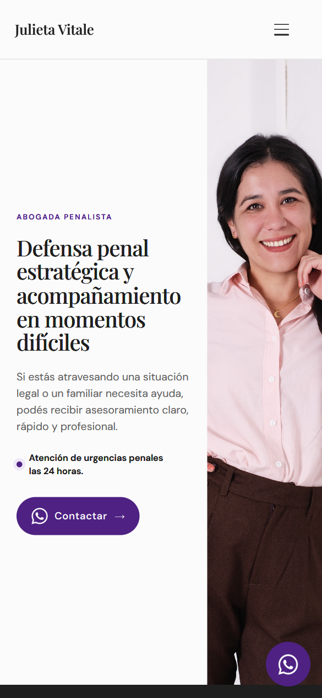
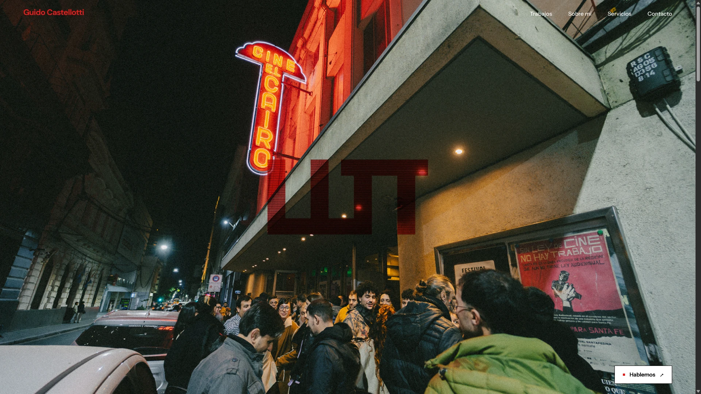

Detalle de lectura y consulta directa en móvil.
Diseñamos sitios para profesionales, creativos y negocios. Cada proyecto empieza por entender qué hacés y cómo querés presentarlo.

Trabajos seleccionados

Detalle de lectura y consulta directa en móvil.
Contanos qué hacés y qué te gustaría mostrar.